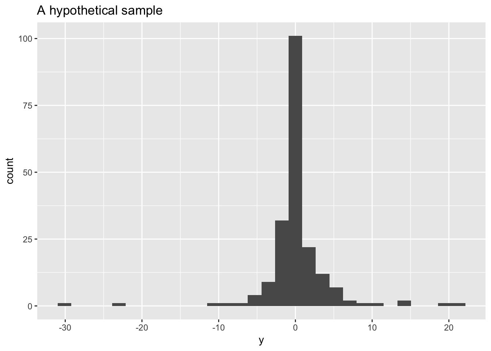
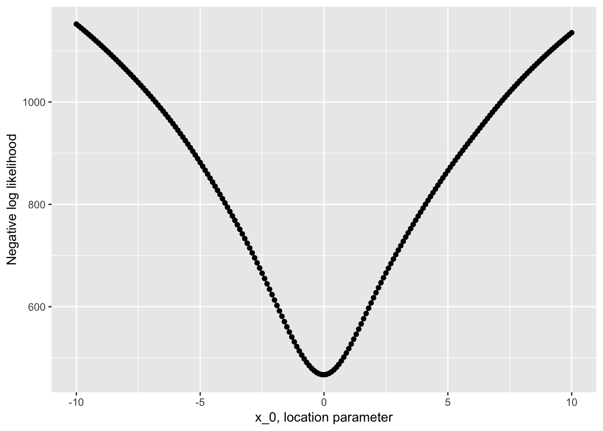

library(tidyverse)
set.seed(18187)optimize()As a motivating example let’s consider estimating the parameters in an i.i.d sample for a Cauchy distribution.
The density function for a random variable with a Cauchy\((x_0, \gamma)\) distribution is: \[ f(x; x_{0},\gamma) = \frac{1}{\pi \gamma \left[1+\left(\frac{x-x_{0}}{\gamma }\right)^{2}\right]}={1 \over \pi \gamma }\left[\gamma ^{2} \over (x-x_{0})^{2}+\gamma ^{2}\right], \] where \(x_0\) is the location parameter and \(\gamma > 0\) is the scale parameter.
Your turn What’s weird about the Cauchy distribution?
To illustrate we’ll work with a (largish) sample from a Cauchy with known parameters \(x_0 = 0\), and \(\gamma = 1\)
y <- rcauchy(n = 200)
ggplot(mapping = aes(x = y)) +
geom_histogram() +
labs(x = "y", title = "A hypothetical sample")## `stat_bin()` using `bins = 30`. Pick better value with `binwidth`.
Your turn If you saw this sample, what interval would you guess the true value for \(x_0\) lies in?
Imagine we are in a situation where \(\gamma = 1\) is known, but we want to use a sample to estimate \(x_0\).
An analytically approach to finding the MLE for \(x_0\) would involve finding the log likelihood: \[ \hat{\ell }(x_{0},\gamma = 1)= -n \log(\pi ) - \sum_{i=1}^{n}\log \left(1+\left({y_{i} - x_{0}}\right)^{2}\right) \]
Taking the derivative w.r.t \(x_0\) \[ \frac{\partial \hat{\ell }(x_{0},\gamma = 1)}{\partial x_0}= \sum_{i=1}^{n}\frac{2(y_i - x_0)}{1+\left({y_{i} - x_{0}}\right)^{2}} \]
And solving the equation \(\frac{\partial \ell}{\partial x_0} = 0\) for \(x_0\): \[ \sum_{i=1}^{n} \frac{2(y_i - x_0)}{1+\left({y_{i} - x_{0}}\right)^{2}} = 0 \]
Which is pretty hard!
Alternatively we can numerically maximize the likelihood. Recall in class we used optimize() to minimize a single variable function, to use this here, we’ll need a function that finds the negative (why?) log likelihood given some data.
One approach is to translate the log likelihood as given above:
nllhood_cauchy <- function(x_0, y){
n <- length(y)
-1 * (- n*log(pi) - sum(log(1 + (y - x_0)^2)))
}A less involved (and less error prone) way would be to use the built-in function dcauchy() for the Cauchy density function along with the argument log = TRUE to work on the log density scale:
nllhood_cauchy <- function(x_0, y){
-1 * sum(dcauchy(y, location = x_0, scale = 1, log = TRUE))
}Before we minimize this function, it’s worth taking a look at it.
Your Turn Why doesn’t this approach work to create a plot?
x <- seq(-10, 10, 0.1)
plot(x, nllhood_cauchy(x_0 = x, y = y))## Error in xy.coords(x, y, xlabel, ylabel, log): 'x' and 'y' lengths differThe way we have written nllhood_cauchy() assumes x_0 is only ever of length 1. This makes it a little harder to use for plotting. We could rewrite our function to allow more than one value of x_0 or we could just work a little harder to apply it to many x_0:
many_x <- data_frame(x = seq(-10, 10, 0.1)) %>%
mutate(nllhood = map_dbl(x, nllhood_cauchy, y = y)) Then plot it:
ggplot(many_x, aes(x, nllhood)) +
geom_point() +
geom_line() +
labs(x = "x_0, location parameter", y = "Negative log likelihood")
Looks pretty nicely behaved on our region of interest.
We can then find the exact point the function is minimized (at least up to numerical error) with:
(mle_x0 <- optimize(f = nllhood_cauchy, interval = c(-10, 10), y = y))## $minimum
## [1] -0.01665738
##
## $objective
## [1] 467.0868So in this case our maximum likelihood estimate of the location parameter based on this sample would be -0.0167.
Your turn This estimate seems reasonable since it is close to the true parameter with which we simulated the sample, but how we could we check our method is working? Brainstorm some ideas, you don’t have to implement them.
Now consider the same situation where both the location and scale parameters need to be estimated. The log likelihood is now, \[ \hat{\ell }(x_{0},\gamma)= -n \log(\gamma\pi ) - \sum_{i=1}^{n}\log \left(1+\left(\frac{y_{i} - x_{0}}{\gamma}\right)^{2}\right) \]
If we proceeded analytically we’d need to find both partial derivatives (w.r.t to \(x_0\) and \(\gamma\)), set them to zero and solve for \(x_0\) and \(\gamma\) simultaneously.
It turns out you need to solve: \[ \sum_{i=1}^{n}\frac{y_{i}-x_{0}}{\gamma^{2} + (y_{i} - x_{0})^{2}} = 0 \\ \sum_{i=1}^{n}\frac{\gamma^{2}}{\gamma^{2}+ (y_{i}-x_{0})^{2}}-{\frac{n}{2}}= 0 \] (taken from https://en.wikipedia.org/wiki/Cauchy_distribution#Estimation_of_parameters). An even harder problem than the one parameter case!
So, instead let’s numerically minimize the negative log likelihood. However we can’t use optimize() here because we need to optimize over two parameters.
optim()optim() is a general purpose optimizer. It implements a number of numerical optimization procedures - variations on two of which we’ll see next week in lecture. These procedures work a little differently to the Golden Section Search – rather than starting with an interval known to contain a minimum, they start from a point near the minimum. For now, we’ll use method = "BFGS", which is closest to the Newton-Rahpson technique we’ll talk about on Tuesday.
Like optimize(), optim() requires you to pass in a function to be minimized. optim() only optimizes over the first argument of the function, so functions of more than one variable must be written to take a vector of parameters as their first argument.
For example, consider trying to minimize the function \(g(x, y) = x^2 + y^2\) over \(x\) and \(y\). To use optim() we’d need to define g like so:
g <- function(args){
x <- args[1]
y <- args[2]
x^2 + y^2
}Then rather than supplying an interval we need to supply initial guesses for the location of the minimum. I happen to know this function has a minimum at \((x = 0, y = 0)\), so let’s try \((x = 0.1, y = 0.1)\) as a guess:
optim(par = c(0.1, 0.1), fn = g, method = "BFGS")## $par
## [1] -5.967296e-16 -5.967296e-16
##
## $value
## [1] 1.780522e-31
##
## $counts
## function gradient
## 4 3
##
## $convergence
## [1] 0
##
## $message
## NULL(Notice that optim() uses a different order, and different names for the arguments compared to optimize() - read more at ?optimize.) In addition to the values at which the minimum occurs $par, and the value of the function at that value $value, pay attention to $convergence which describes whether the algorithm converged, any value other that 0 indicates a problem.
No problems here though.
Your Turn Use optim() to find MLE estimates for both \(x_0\) and \(\gamma\) in a Cauchy model for the data in y. Recommended steps:
Write a function nllhood_cauchy2() that takes arguments theta and y, where theta is a two parameter vector containing x_0 and gamma. Feel free to use dcauchy() to help you.
Use optim() on nllhood_cauchy2() with guesses based on the histogram of the sample.
Your Turn In the output from optim() $counts counts the number of times the function and its gradient were computed. Instead of guessing starting values for \(x_0\) and \(\gamma\) from the plot try using the median and half the interquartile range of the sample for starting values – does the algorithm converge to the same values? Does it converge faster?
Recall the setup from lecture, data come in pairs \((y_i, x_i), i = 1, \ldots, n\).
\(y_i \sim \text{ Bernoulli}(\pi_i)\), where
\[ \log{\frac{\pi_i}{1-\pi_i}} = \beta_0 + \beta_1 x_i \]
Implies \(\pi_i = \frac{\exp(\beta_0 + \beta_1 x_i)}{1 + \exp(\beta_0 + \beta_1 x_i)}\).
This is a simple logistic regression model.
\[ \mathcal{L(\beta_0, \beta_1)} = \prod_{i = 1}^{n} \pi_i^{y_i} (1-\pi_i)^{(1-y_i)} \] \[ \mathcal{l(\beta_0, \beta_1)} = \sum_{i = 1}^n y_i \log(\pi_i) + (1- y_i)\log(1- \pi_i) \]
Your Turn Write a function nllhood_logistic() that takes three arguments beta a two dimensional vector of \(\beta_0\) and \(\beta_1\), y a vector of observed responses, and x a corresponding vector of observed covariates.
Use your function to find the MLE of \(\beta_0\) and \(\beta_1\) from fitting the model to the following data:
x <- c(-0.12, -0.77, 0.33, 0.99, -2.09, 0.41, 1.86, -0.26, -0.43,
0.51, -0.93, 1.46, 0.02, -0.34, 1.57, -0.47, -1.64, -0.48, 0.3,
0.52, 0.92, 1.65, -0.82, 0.01, 0.02, 0.47, -0.48, -1.08, 0.04,
-0.87)
y <- c(0L, 0L, 1L, 1L, 0L, 1L, 1L, 1L, 0L, 1L, 0L, 1L, 1L, 0L, 1L,
1L, 0L, 1L, 1L, 0L, 1L, 1L, 0L, 0L, 1L, 1L, 1L, 1L, 1L, 0L)You might want to compare your answer to:
glm(y ~ x, family = "binomial")##
## Call: glm(formula = y ~ x, family = "binomial")
##
## Coefficients:
## (Intercept) x
## 0.8802 2.0679
##
## Degrees of Freedom: 29 Total (i.e. Null); 28 Residual
## Null Deviance: 39.43
## Residual Deviance: 27.47 AIC: 31.47(They should agree)